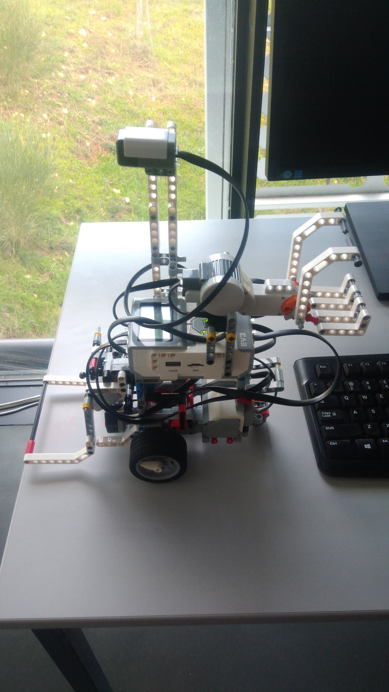
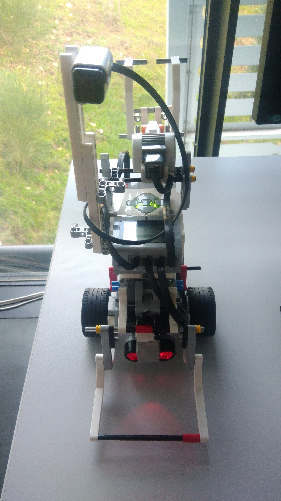

We decided to use 3 sensors and 4 motors. The first sensor is ultrasonic to check the distance to obstacles due to we can not bump into them. The second one is color sensor to recognise what kind obstacle do we handle. The last one is compas sensor. It is used to make precisize rotation.
We used two large motors to initiate wheels, so we can turn around by changing the rotation. The third large motor is used to release the obstacle. The medium motor is used to put down and up the front frame to catch the obstacle.

Thats our robot without flag, the side look.

The front look with the lowered frame.
Algorithms!
We have two main algorithms for cartography strategy, the one for big area and the one for small one.
Big Area Algorithm:
-Going along the fences to create a map of whole area.
-When there is an obstacle near the fence walk it around and continue fence exploration.
-Once the fence exploration is finished check unknown points for the map and follow the obstacle hunting algorithm.
We think the strong part of this algorithm is that, we will have fences of the stadium really fast. After that it will be easy to scan the area to get positions of obstacle and precisize theirs location.
Small Area Algorithm:
-Fences of the area are known, so start the obstacle hunting algorithm.
-Go through the middle of the area and scan around.
-Map every seen obstacle and after thet to to theirs positions to get the most accurate values of the position.
As far as we know the fences it is a good idea to scan the stadium to find obstacles and mark them on the map.
Obstacle Hunting Algorithm:
-Scan around and map every seen obstacle.
-Follow the mapped obstacles to get theirs positions.
-Randomly choose obstacles to check them.
Handling with obstacles:
-When ultrasonic sensor detects something in front of the robot it stops.
-Robot checks the color of the obstacle and decides if its movable or not.
-If the obstacle is movable it chaches the obstacle and put behind the robot, otherwise it recognizes as nonmovable and will not touch it.
In that algorithm we wanted to handle the movable obstacles.
We assumed that users can easily connect to the robots and clone github repository.
-Move to proper directory (the cloned one).
-Run "make" command.
-Execute the "./main map_type area".
map_type argument requires "0" for small stadium or "1" for big stadium.
area argument is for the starting position. "0" is for the left position, "1" is for right one.
Test results
At the final test our robot failed totally. Our assumption and algorithm to go to the closest obstacle was not finished and robot stucked near it, so did not explore the map.
After first four tests, which had a place to show our status in progress, showed it was okay, but our whole project was not finished. We did not make enough tests, so we were not prepared for large area and sending a map to the server.
We could handle the obstacle, recognize, grab and release them. We were able to explore the map, but our positioning system did not work very well, so the map would be useless a bit.
There is a video below, that our robot could work correctly: